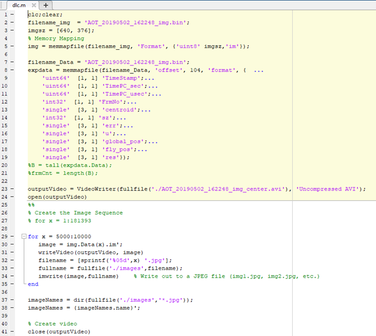
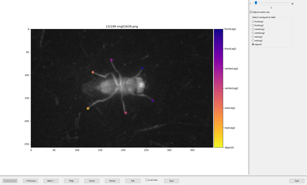
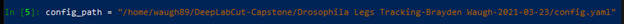

3. DeepLabCut Labelling and Training¶
The objective of our capstone project is to train a network to recognize and track the center point (centroid) of the fruit fly. This is the point that the TOLC uses to determine how to orient the sphere. We manually labeled 100 frames out of a total of 60,984 to create a network that automatically places the centroid label on the fly. In addition to the centroids, we trained a network that recognizes and places labels on the fly’s legs. For this network, we manually labeled 200 frames to ensure that we got the results we desired.
SOFTWARE:
Anaconda Individual Edition 1.10.0
DeepLabCut 2.1.10.2
Ubuntu 18.04.5 LTS
Windows 10
[OPTIONAL] WinSCP 5.17.10
[OPTIONAL] MatLAB R2021a
Step 1 - Local machine and server preparation:¶
● Local Machine
○ Install Anaconda Individual Edition.
○ Use Conda Configuration file provided by DLC developers for CPU for Anaconda environment setup (http://www.mackenziemathislab.org/deeplabcut).
○ [OPTIONAL] Install WinSCP (for easier file transfer between local machine and server).
○ [OPTIONAL] Install MatLAB for video file conversion.
● Server
○ Install Anaconda Individual Edition.
○ Use Conda Configuration file provided by DLC developers for GPU for Anaconda environment setup (http://www.mackenziemathislab.org/deeplabcut)
[OPTIONAL] Step 1a - Video Data Conversion
This step was only necessary for us because we needed the video data in a compatible format for DeepLabCut. If your video data is already of a common extension (.*mp4*, .*avi*), continue to Step 2.
● Use MatLAB code to convert image data binary file to .*avi*.

The following 4 steps（step 2-step 5) are carried out on the Windows machine.
Step 2 - Create the project file.¶
● Open Anaconda, activate the DLC-CPU environment, and open it with IPython.
● Type ‘import deeplabcut’ in the terminal that appears.
● Type deeplabcut.launch_dlc() to start DeepLabCut’s GUI.
● Click on the Manage Project tab and select Create new project.
● Give the project a name, the experimenter’s name, and select the video(s) to be used.
● Under optional attributes, select copy the videos. This attribute is necessary on Windows operating systems.
● Click OK to generate the project directory.
NOTE: To load an existing project, follow the above steps until Manage Project. From there, select Load an existing project, and select the config file that was generated in your project directory.
Step 3 - Edit Project Configuration file¶
● In the config.yaml file, we changed the following fields:
○ bodyparts
○ numframes2pick
○ dotsize
● The bodyparts parameter specifies the names for the labels you will use on the video.
● The numframes2pick parameter specifies the amount of frames that are selected by the kmeans algorithm in the next step (Extract Frames). We used 100 for centroid tracking and 200 for legs tracking.
● The dotsize parameter determines the default size of the labels.
Step 4 - Extract Frames¶
● For our testing, we set the optional attributes to the following:
○ Extraction method: automatic
○ Crop Frames?: GUI
○ User Feedback?: No
○ Use OpenCV?: No
● For frame extraction, we used the kmeans algorithm with default cluster step (1) and default GUI slider width (25).
● Press OK to extract frames.
Step 5 - Label Frames¶
● Click Label Frames to bring up the frame labelling GUI.
● Click Load Frames and select the directory where the extracted frames are stored.
● Use the arrow keys to change the current label.
● Right click to apply a label at the mouse cursor. The next label (if applicable) will be selected automatically. Left click and drag a label to adjust it.
● Once all frames have been labeled, select Quit.
● Press the Check Labels! Button to ensure that the frames were labelled successfully.

The following 2 steps(step 6-step 7) are carried out on the Linux server.
Step 6 - Create training dataset¶
● Move the project to the computer/server/data cluster where it will be trained.
○ IMPORTANT: Once on the training machine, edit the project_path parameter in config.yaml with the project’s new path.
● Activate the conda environment on the server.
● Use export DLClight=True to suppress the GUI (if machine does not support GUIs).
● Open IPython and run import deeplabcut.
● Create a variable to store the path of your config file:
● Use the following command to create the training dataset:
deeplabcut.create_training_dataset(config_path, augmenter_type=’imgaug’)
Step 7 - Train the Network¶
● Use the following command to train the network: deeplabcut.train_network(config_path)
● The command has optional parameters. For our training, we used the following:
○ Centroid Training:
deeplabcut.train_network(config_path, shuffle=1, gputouse=0, max_snapshots_to_keep=5, autotune=False, displayiters=1000, saveiters=15000, maxiters=160000)
○ Legs Training: deeplabcut.train_network(config_path, shuffle=1, gputouse=0, max_snapshots_to_keep=5, autotune=False, displayiters=1000, saveiters=20000, maxiters=200000)
● Shuffle indicates the index of the training dataset to use (default 1)
● gputouse indicates the index of the GPU to use for training
● Max_snapshots_to_keep indicates how many states of the network to save.
● Autotune is a property of TensorFlow and makes training more efficient when set to False
● Displayiters indicates how often the network will display loss information.
● Saveiters determines how often states of the network are saved.
● Maxiters determines how many iterations the network will be trained for.
The following 3 steps(step 8-step 10) are carried out on the Windows Machine.
Step 8 - Evaluate the network¶
● Once the network is trained, move it back onto the Windows machine.
○ IMPORTANT: Once on the Windows machine, edit the project_path parameter in config.yaml with the project’s new path.
● Under the Evaluate Network tab in the DeepLabCut GUI, we used the following attributes:
○ Specify the shuffle: 1
○ Specify the trainingset index: 0
○ Want to plot maps: Yes
○ Want to plot predictions: Yes
○ Compare all bodyparts: Yes
● Click on Evaluate Network to begin evaluation.
Step 9 - Analyze Videos¶
● Under the Analyze Videos tab, select the video(s) to analyze.
● We used the following attributes:
○ Videotype: .avi
○ Specify the shuffle: 1
○ Specify the trainingset index: 0
○ Save results as csv: No
○ Filter the predictions: No
○ Want plots to pop up: Yes
○ Dynamically crop bodyparts: No
○ Plot trajectories: No
● Click on Analyze Videos to begin analysis.
Step 10 - Create Videos¶
● Under the Create Videos tab, select the videos to apply labels to.
● We used the following attributes:
○ Specify the shuffle: 1
○ Specify the trainingset index: 0
○ Include the skeleton: No
○ Specify trail points: 0
○ Create higher quality video: No
○ Use filtered predictions: No
○ Plot all bodyparts: Yes
● Click on RUN to create the labeled video(s).